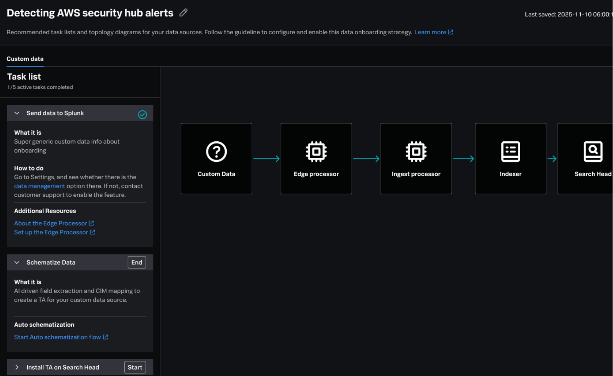

Case study · Trust & Automation · Enterprise Data Platform
AI & Guided Onboarding
How data admins onboard the right organizational data to the right destinations, and where AI should assist, review, or stay out of the way entirely.
Lingyi Ge · Sole researcher, end-to-end, generative research + concept evaluation
5 in-depth interviews · 8 min read

Guided onboarding prototype: task flow paired with a pipeline topology concept.
The brief
We had a guided-onboarding MVP in alpha. The question for near-term release planning was blunt: how much of this journey can AI actually own, and where do users insist on staying in control?
Product and design were aligned on expanding automation, script generation, environment discovery, and a topology map every admin would see on day one. Nobody yet had evidence on where automation would earn trust, or where it would be rejected before a human clicked “apply.”
What the team assumed going in:
More AI in the flow would mean faster time-to-value
A visual topology map would help everyone orient quickly
Enterprise users were ready for agent-driven onboarding
What was at stake: Ship the wrong automation and you add UI complexity without shortening time-to-value. Cost approvers block ingestion. Engineers refuse one-click deploy. Sponsors still wait on ticketing workflows. The prototype could look intelligent and still fail in production.
Research goals
01 · Attitudes to AI
Gauge appetite for AI agents, and where full automation is a red flag.
02 · Collaboration
Map how teams onboard data, hand off work, and make decisions together.
03 · Topology maps
Test whether a pipeline topology concept helps the right people for the right job, or adds noise.
My role & methods
I led this study end-to-end: recruitment, five 90 minute generative interviews, synthesis, persona framework, journey mapping, concept evaluation, and a cross-functional readout ahead of release planning.
Participants were senior practitioners across public sector, retail, SaaS, MSP, and consulting: platform owners, architects, engineers, and security leads. I intentionally mixed proactive (strategic harmonization) and reactive (incident-driven) onboarding stories.
Synthesis lenses: Automation · User journey · Collaboration
The core finding
“Data onboarding is an organizational relay race where the baton is frequently dropped.”
The Sponsor buys a vision, the Architect draws a map, the Doer digs the trench, the Guardian watches the meter, and the Operator waits for the water. The primary failure point is the Implementation Gap, where business intent collides with messy, legacy reality.
Five personas in the relay
Each persona sits at a different point on the trust curve, no single automation setting serves them all.
The Sponsor
The Outcome Owner
“I don’t care how the data gets here, as long as we pass the audit and save money.”
AI trust: High (ROI modeling)
The Architect
The Blueprint Designer
“I build the patterns so the engineers don’t reinvent the wheel.”
AI trust: Low (needs logic & transparency)
The Doer
The Trench Digger
“I’m doing registry surgery at 2 a.m. because the installer broke.”
AI trust: Medium (needs review)
The Guardian
The Budget Watchdog
“Windows logs are 90% junk. I’m not paying to index Microsoft’s fluff.”
AI trust: Low (cost & privacy)
The Operator
The First Responder
“I only care about the platform when the application is down.”
AI trust: High (speed & summarization)
Headline insight
Users want a co-pilot, not an auto-pilot.
Trust is conditional : calibrated by the complexity of the task, the sensitivity of the data, and the ability to review and override the AI’s output.
● Green lights, automate now
Code & script generation
Already trusted via Copilot, a fast start the engineer still reviews.
Environment discovery
A non-intrusive evolution of tools they already run.
Documentation & content
Low-risk, high-reward, “chicken-scratch” notes into runbooks.
● Red flags, keep humans in the loop
Direct config changes
The biggest “no.” The final apply must be a human action.
Sensitive data (PII / IP)
A hard trust barrier for defense, biopharma & government.
High-level strategy
Needs human context, trade-offs, and stakeholder buy-in.
Native vs. third-party AI
Trust follows the provider, native is trusted over outside tools.
Design principle
If AI discovers data but cost approval and legacy infrastructure fixes stay manual, time-to-value doesn’t improve.
The topology map is powerful, but not for everyone
Architects and advanced engineers saw the topology graph as a way to translate strategy into an actionable engineering plan. For connector-only users, the multi-stage flow was confusing and irrelevant.
“A powerful blueprint for architects, but overkill for simpler, connector-based use cases.”
The clear signal: make depth progressive, not default.
What changed
Research didn’t just produce insights, it reframed release scope before teams locked their bets.
Automation scope
Before Expand AI across the onboarding workflow.
After Automate preparation (scripts, scans, documentation); keep humans on commit (deploy, cost approval, sensitive data).
Outcome One-click production config deployment excluded from the first AI-assisted release. Co-pilot patterns with explicit review became the default framing for eng and design epics.
Topology & audience
Before One guided flow for everyone.
After Role-based paths, depth for architects, simplicity for connector-ready workflows.
Outcome Design stopped treating a single topology view as the universal entry point.
Shared vocabulary
Before Debates framed as “how much AI?”
After Debates framed as “which handoff does this automation actually shorten?”
Outcome “Co-pilot not auto-pilot,” “implementation gap,” and “relay race” entered release planning conversations across PM, Design, and Eng.
Concept evaluation
Two paths, one product: depth by role, not by default
“A blueprint for action, not noise for connector-only users.”
ArchitectSenior DoerSponsor (ROI view)
Impact
The trust & automation framework became the lens two product teams used to prioritize agentic features, focusing build effort on green-light tasks and designing explicit human checkpoints everywhere else.
It shaped near-term release scope for AI-assisted onboarding and gave design a shared, evidence-backed vocabulary for the co-pilot model, turning a fuzzy debate about “how much AI” into a calibrated map of where automation earns trust.
Readout summary · Redacted
Research → Framework → Release implications
01 · Research findings
Organizational relay race
Baton drops at the implementation gap.
Five handoff roles
Each with different success metrics.
Co-pilot appetite
AI prep yes, auto-apply no.
Topology not universal
Architects vs. connector users.
n=5 · 90 min · mixed journeys
→
02 · Framework
Co-pilot, not auto-pilot
Trust = task complexity + data sensitivity + reviewability
Green lights
Red flags
Script & code generation
Direct config deploy
Environment discovery
Sensitive data decisions
Documentation & runbooks
High-level strategy calls
Summarization & speed
Unreviewed third-party AI
“I’ll take the code from AI, but I’m the one who clicks apply.”
Generative interviews · concept evaluation · cross-functional readout · artifact redacted for public portfolio
Reflection
The biggest lesson: AI is another layer on top of real pain points, use cases, and jobs, not a shortcut around them. This study only worked because we’d already named the job and mapped where handoffs break. Without that foundation, we would have been debating “how much AI” instead of whether AI could shorten a step users actually struggle with.
I’d still lead with organizational handoffs, not AI feature enthusiasm. The relay-race metaphor did more work than any single UI recommendation, because the pain wasn’t “lack of intelligence,” it was dropped batons between Sponsor, Architect, Doer, Guardian, and Operator.
The bar for AI isn’t “can we automate this?” It’s “does this remove friction from a job users are already trying to get done?” Splashing AI on every screen adds complexity without improving time-to-value if cost approval, legacy fixes, and human commit points stay manual.
n=5 is appropriate for strategic generative work with senior practitioners. I paired interview depth with prototype evaluation and existing alpha learnings rather than claiming statistical coverage.